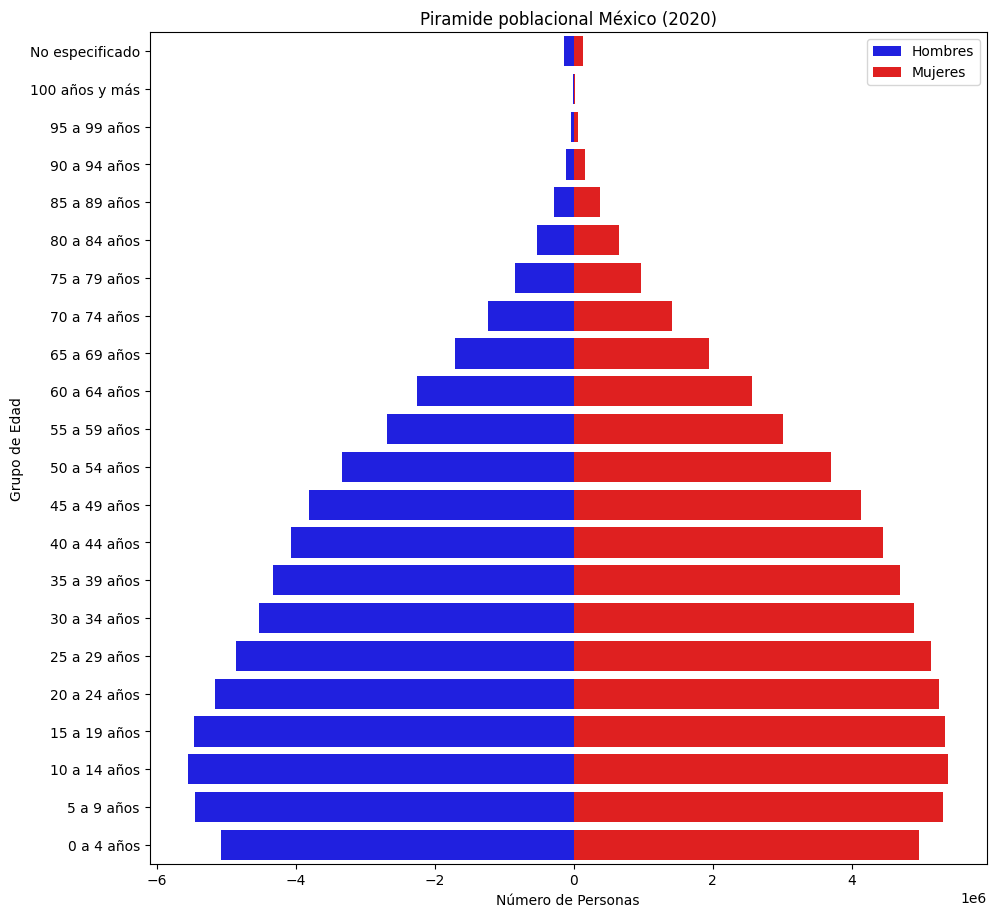
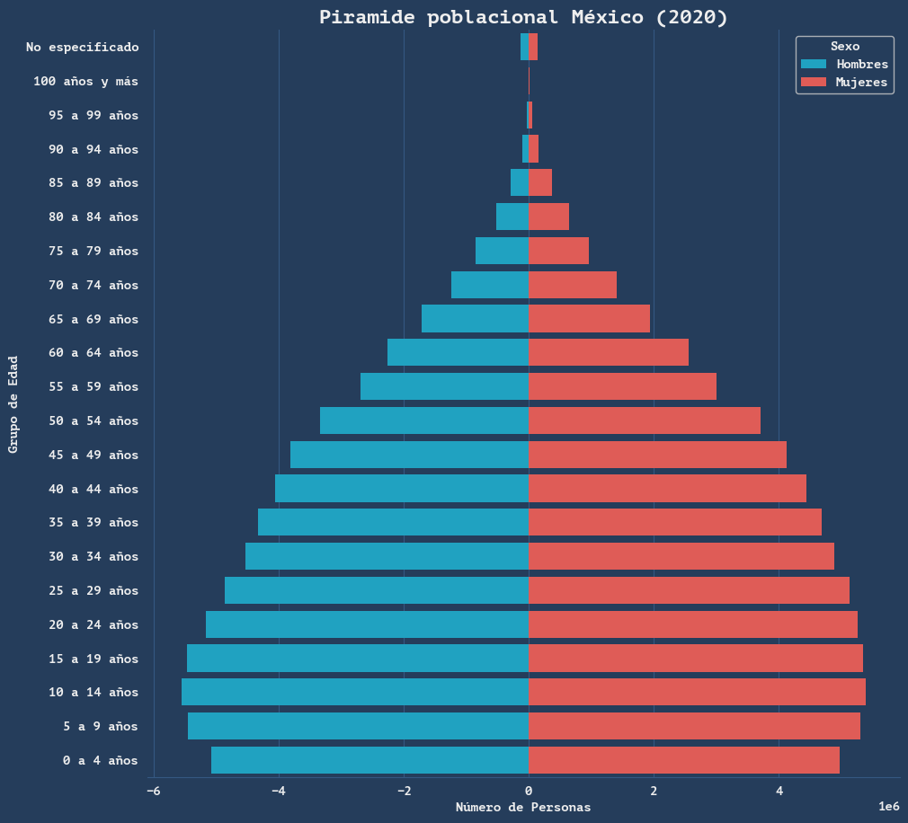
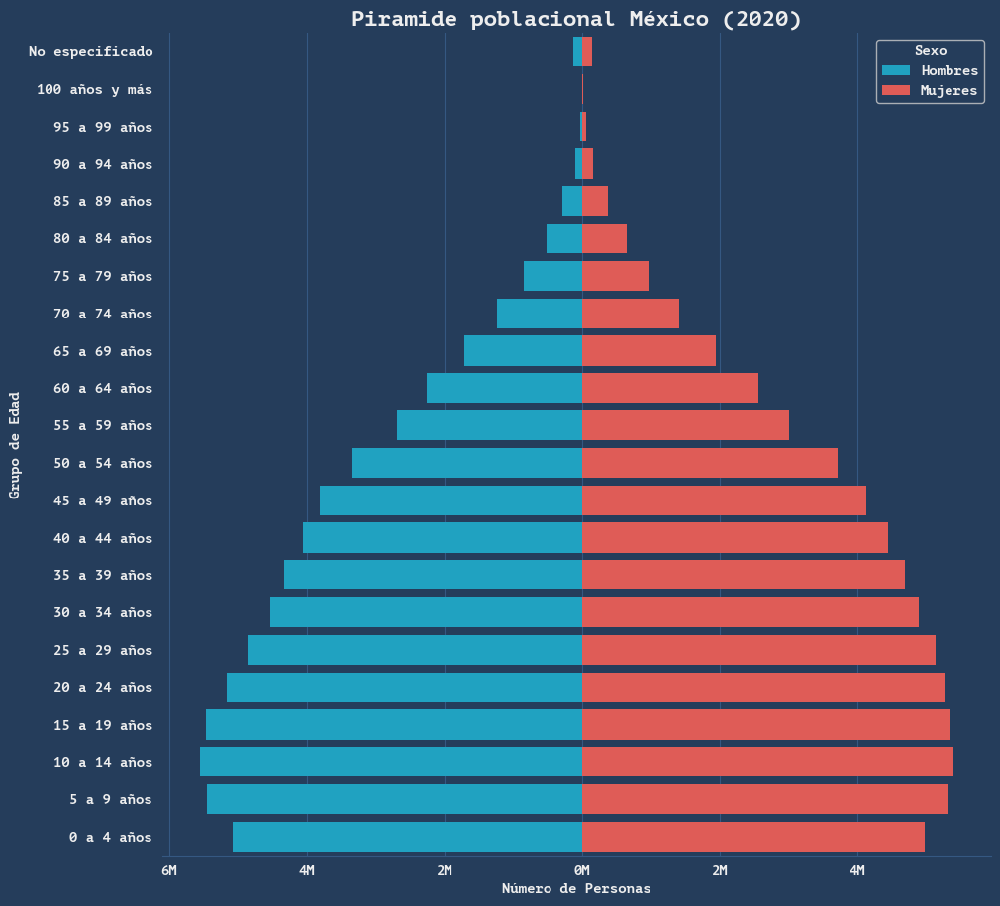
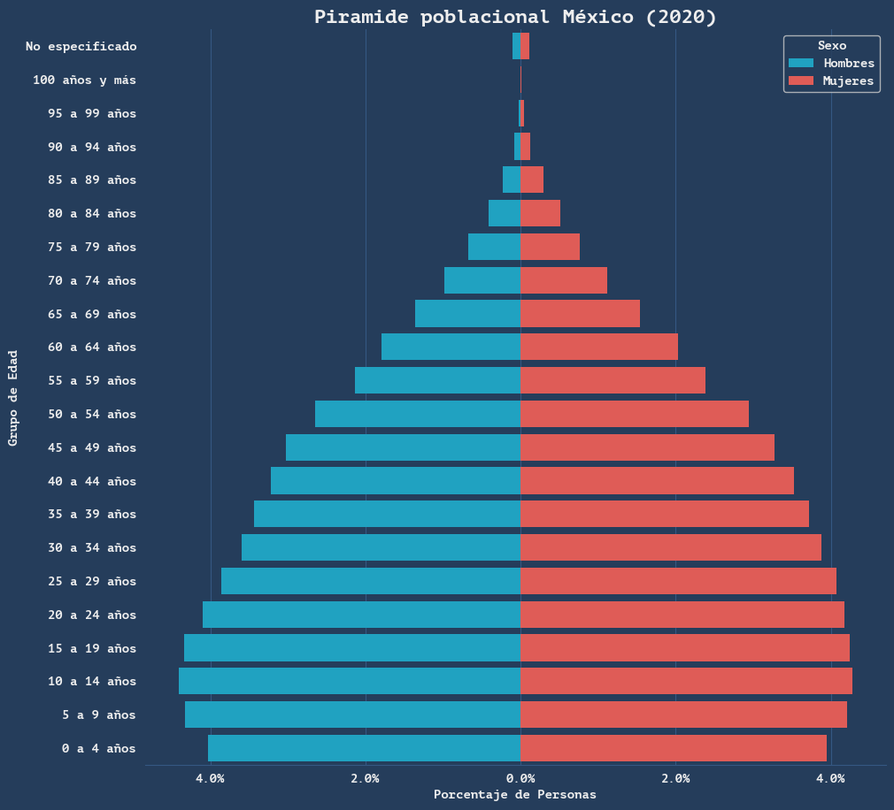
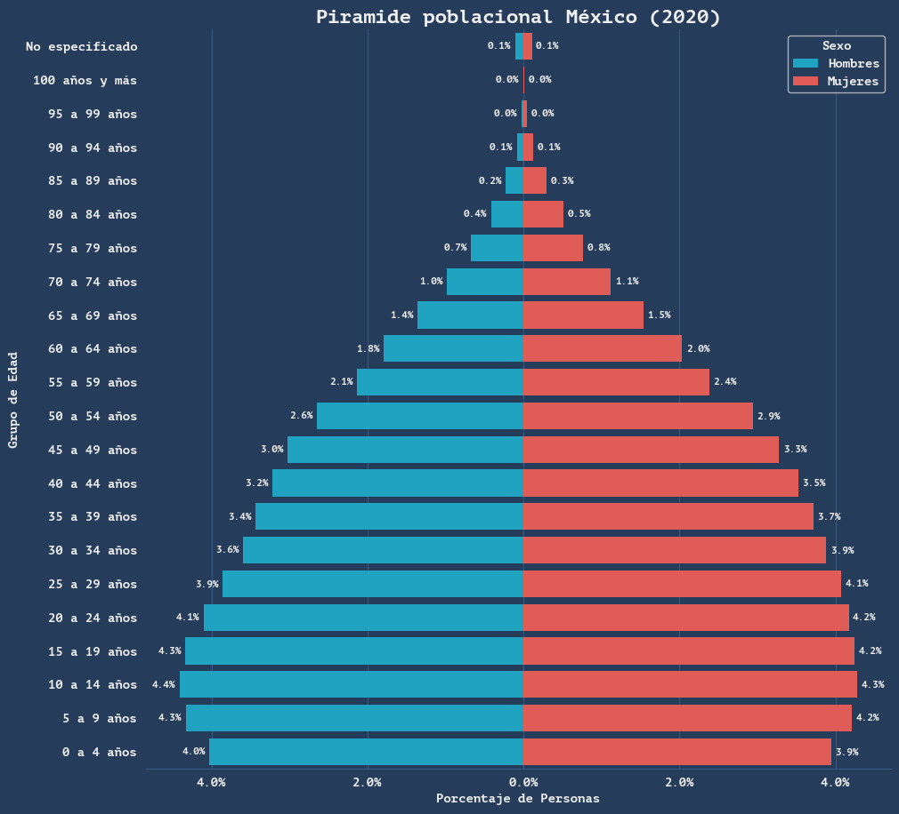

import pandas as pd
import numpy as np
import matplotlib.pyplot as plt
import seaborn as sns
sns.reset_defaults()
sns.reset_orig()Introducción
En este documento te mostraré como crear el gráfico de distribución poblacional conocido como pirámide poblacional. Este tipo de gráfico es útil para visualizar la distribución de edades y sexos en una población determinada. A lo largo del documento, aprenderás:
- Cómo crear gráficos con Seaborn
- Mejorar los ejes para hacerlos legibles e informativos
- Agregar un título y leyenda elegantes
- Cuadrículas para múltiples gráficos
Las liberías que usaremos en este archivo son:
Datos
Para este ejercicio, usaremos datos de población por edad y sexo del Censo de Población y Vivienda 2020 del INEGI. Fuente.
datos = pd.read_csv("poblacion2020.csv")
datos.head()| Entidad | GrupoEdad | Total | Hombres | Mujeres | |
|---|---|---|---|---|---|
| 0 | Estados Unidos Mexicanos | Total | 126014024 | 61473390 | 64540634 |
| 1 | Estados Unidos Mexicanos | 0 a 4 años | 10047365 | 5077482 | 4969883 |
| 2 | Estados Unidos Mexicanos | 5 a 9 años | 10764379 | 5453091 | 5311288 |
| 3 | Estados Unidos Mexicanos | 10 a 14 años | 10943540 | 5554260 | 5389280 |
| 4 | Estados Unidos Mexicanos | 15 a 19 años | 10806690 | 5462150 | 5344540 |
Tenemos seis columnas, descritas a continuación:
- Entidad: contiene los diferentes estados de México. Los registros con la Entidad igual a “Estados Unidos Mexicanos” contienen los datos totales nacionales.
- GrupoEdad: contiene los grupos quinquenales de edad (0-4, 5-9, 10-14, etc.). Además, hay un grupo adicional con la etiqueta “Total” que contiene el total de todas las edades.
- Hombres: contiene el número de hombres en cada grupo de edad y estado.
- Mujeres: contiene el número de mujeres en cada grupo de edad y estado.
- Total: contiene el número total de personas (hombres + mujeres) en cada grupo de edad y estado.
Por temas de visualización que veremos más adelante, convertimos en valores negativos los datos de población de hombres (o mujeres, según se prefiera):
datos['Hombres'] = -datos['Hombres']
datos.head()| Entidad | GrupoEdad | Total | Hombres | Mujeres | |
|---|---|---|---|---|---|
| 0 | Estados Unidos Mexicanos | Total | 126014024 | -61473390 | 64540634 |
| 1 | Estados Unidos Mexicanos | 0 a 4 años | 10047365 | -5077482 | 4969883 |
| 2 | Estados Unidos Mexicanos | 5 a 9 años | 10764379 | -5453091 | 5311288 |
| 3 | Estados Unidos Mexicanos | 10 a 14 años | 10943540 | -5554260 | 5389280 |
| 4 | Estados Unidos Mexicanos | 15 a 19 años | 10806690 | -5462150 | 5344540 |
Gráfico básico
Primero crearemos un gráfico básico para visualizar la pirámide poblacional de México. Filtramos los datos para obtener solo los registros correspondientes a “Estados Unidos Mexicanos”, además de eliminar el grupo de edad “Total”:
datos_mexico = datos[datos['Entidad'] == 'Estados Unidos Mexicanos']
datos_mexico = datos_mexico[datos_mexico['GrupoEdad'] != 'Total']A continuación, creamos el gráfico base usando seaborn:
plt.figure(figsize=(10.8, 10.8), dpi=100)
ax = sns.barplot(x='Hombres', y='GrupoEdad', data=datos_mexico, color='blue', label='Hombres')
ax = sns.barplot(x='Mujeres', y='GrupoEdad', data=datos_mexico, color='red', label='Mujeres')
plt.title('Piramide poblacional México (2020)')
plt.xlabel('Número de Personas')
plt.ylabel('Grupo de Edad')
plt.legend()
plt.gca().invert_yaxis() # Utilizar únicamente si su pirámide está invertida
plt.show()
Anteriormente convertimos el valor de hombres a negativo para que las baras horizontales se dibujen hacia la izquierda y derecha dependiendo del sexo.
Cómo se observa, el gráfico es funcional, pero puede mejorarse visualmente en varios aspectos, como los ejes, el título y la leyenda.
Mejoras visuales
Una de las ventajas de usar Seaborn es la facilidad con la que se pueden personalizar los gráficos. Esto se logra mediante la función set_style, que permite definir varios aspectos visuales del gráfico.
A continuación, crearemos una función para aplicar un estilo personalizado a nuestros gráficos:
def set_seaborn_style(font_family, background_color, grid_color, text_color):
sns.set_style({
"axes.facecolor": background_color,
"figure.facecolor": background_color,
"axes.labelcolor": text_color,
"axes.edgecolor": grid_color,
"axes.grid": True,
"axes.axisbelow": True,
"grid.color": grid_color,
"font.family": font_family,
"text.color": text_color,
"xtick.color": text_color,
"ytick.color": text_color,
"xtick.bottom": False,
"xtick.top": False,
"ytick.left": False,
"ytick.right": False,
"axes.spines.left": False,
"axes.spines.bottom": True,
"axes.spines.right": False,
"axes.spines.top": False,
}
)Observa como la función set_seaborn_style permite personalizar varios aspectos del estilo del gráfico, incluyendo la familia de fuentes, colores de fondo, colores de cuadrícula y colores de texto.
Para aplicar este estilo a nuestros gráficos, simplemente llamamos a la función antes de crear cualquier gráfico y definimos los parámetros deseados.
Ten en cuenta que todos las gráficos creados después de llamar a esta función adoptarán el estilo definido. Si deseas volver al estilo predeterminado de Seaborn, puedes usar sns.reset_defaults() o sns.reset_orig().
Apliquemos la función a nuestra pirámide poblacional para observar las mejoras:
set_seaborn_style(
font_family="PT Mono",
background_color="#253D5B",
grid_color="#355882",
text_color="#EEEEEE"
)
plt.figure(figsize=(10.8, 10.8), dpi=100)
ax = sns.barplot(x='Hombres', y='GrupoEdad', data=datos_mexico, color='#05B2DC', label='Hombres')
ax = sns.barplot(x='Mujeres', y='GrupoEdad', data=datos_mexico, color='#F64740', label='Mujeres')
plt.title('Piramide poblacional México (2020)', fontsize=16, weight='bold')
plt.xlabel('Número de Personas')
plt.ylabel('Grupo de Edad')
plt.legend(title='Sexo')
plt.gca().invert_yaxis() # Utilizar únicamente si su pirámide está invertida
plt.xticks(fontsize=10)
plt.yticks(fontsize=10)
plt.show()
Si tenemos los mismos gustos, estaremos de acuerdo en que hay una mejora significativa en la apariencia del gráfico.
Mejoras informativas
Ahora que el gráfico luce mejor, es momento de hacer que sea más informativo. Particularmente, daremos formato al eje x, de tal forma que los valores aparezcan en miles (K), millones (M) o porcentaje (%), según sea el caso.
Primero, veamos los valores actuales del eje x (los extremos no se grafican, por lo que no nos interean):
ax.get_xticks()[1:-1]array([-6000000., -4000000., -2000000., 0., 2000000., 4000000.])Aunque los valores aparecen completos, la gráfica por defecto los muetra en notación científica, lo cual no es muy amigable para el lector. Para mejorar esto, crearemos una función que genere las etiquetas del eje x en el formato deseado:
def create_x_labels(ax, formato):
if formato == "millones":
return ["{}M".format(round(abs(x / 1000000))) for x in ax.get_xticks()[1:-1]]
elif formato == "miles":
return ["{}K".format(round(abs(x / 1000))) for x in ax.get_xticks()[1:-1]]
elif formato == "porcentaje":
return ["{}%".format(round(abs(x)*100, 1)) for x in ax.get_xticks()[1:-1]]La función create_x_labels toma dos argumentos: el objeto ax del gráfico y el formato deseado para las etiquetas. Dependiendo del formato especificado (“millones”, “miles” o “porcentaje”), la función devuelve una lista de etiquetas formateadas adecuadamente.
Apliquemos esta función a nuestro gráfico de pirámide poblacional:
set_seaborn_style(
font_family="PT Mono",
background_color="#253D5B",
grid_color="#355882",
text_color="#EEEEEE"
)
plt.figure(figsize=(10.8, 10.8), dpi=100)
ax = sns.barplot(x='Hombres', y='GrupoEdad', data=datos_mexico, color='#05B2DC', label='Hombres')
ax = sns.barplot(x='Mujeres', y='GrupoEdad', data=datos_mexico, color='#F64740', label='Mujeres')
plt.title('Piramide poblacional México (2020)', fontsize=16, weight='bold')
plt.xlabel('Número de Personas')
plt.ylabel('Grupo de Edad')
plt.legend(title='Sexo')
plt.gca().invert_yaxis() # Utilizar únicamente si su pirámide está invertida
plt.xticks(ticks=ax.get_xticks()[1:-1], labels=create_x_labels(ax, formato="millones"), fontsize=10)
plt.yticks(fontsize=10)
plt.show()
Observa cómo las etiquetas del eje x ahora están en un formato más legible, mostrando los valores en millones (M). Esto mejora significativamente la comprensión del gráfico, haciendo que los datos sean más accesibles para el lector.
Porcentaje de población
Otra forma útil de visualizar la pirámide poblacional es mediante porcentajes en lugar de números absolutos. Esto permite comparar la distribución de edades entre diferentes poblaciones o estados sin importar el tamaño total de la población. Para lograr esto, primero calculamos el porcentaje de hombres y mujeres en cada grupo de edad con respecto al total nacional:
total_poblacion = -datos_mexico['Hombres'].sum() + datos_mexico['Mujeres'].sum()
datos_mexico['ptg_Hombres'] = (datos_mexico['Hombres'] / total_poblacion)
datos_mexico['ptg_Mujeres'] = (datos_mexico['Mujeres'] / total_poblacion)
datos_mexico.head()| Entidad | GrupoEdad | Total | Hombres | Mujeres | ptg_Hombres | ptg_Mujeres | |
|---|---|---|---|---|---|---|---|
| 1 | Estados Unidos Mexicanos | 0 a 4 años | 10047365 | -5077482 | 4969883 | -0.040293 | 0.039439 |
| 2 | Estados Unidos Mexicanos | 5 a 9 años | 10764379 | -5453091 | 5311288 | -0.043274 | 0.042148 |
| 3 | Estados Unidos Mexicanos | 10 a 14 años | 10943540 | -5554260 | 5389280 | -0.044077 | 0.042767 |
| 4 | Estados Unidos Mexicanos | 15 a 19 años | 10806690 | -5462150 | 5344540 | -0.043346 | 0.042412 |
| 5 | Estados Unidos Mexicanos | 20 a 24 años | 10422095 | -5165884 | 5256211 | -0.040995 | 0.041711 |
Ahora, creamos el gráfico de pirámide poblacional usando los porcentajes calculados:
set_seaborn_style(
font_family="PT Mono",
background_color="#253D5B",
grid_color="#355882",
text_color="#EEEEEE"
)
plt.figure(figsize=(10.8, 10.8), dpi=100)
ax = sns.barplot(x='ptg_Hombres', y='GrupoEdad', data=datos_mexico, color='#05B2DC', label='Hombres')
ax = sns.barplot(x='ptg_Mujeres', y='GrupoEdad', data=datos_mexico, color='#F64740', label='Mujeres')
plt.title('Piramide poblacional México (2020)', fontsize=16, weight='bold')
plt.xlabel('Porcentaje de Personas')
plt.ylabel('Grupo de Edad')
plt.legend(title='Sexo')
plt.gca().invert_yaxis() # Utilizar únicamente si su pirámide está invertida
plt.xticks(ticks=ax.get_xticks()[1:-1], labels=create_x_labels(ax, formato="porcentaje"), fontsize=10)
plt.yticks(fontsize=10)
plt.show()
Agregar etiqueta a cada barra
Finalmente, para mejorar aún más la información proporcionada por el gráfico, podemos agregar etiquetas a cada barra que indiquen el valor exacto representado.
Esto es especialmente útil cuando se desea resaltar ciertos datos específicos o cuando el gráfico se presenta en un contexto donde los detalles son importantes. Para agregar estas etiquetas, podemos usar la función text de Matplotlib dentro de un bucle que recorra cada barra del gráfico. Aquí te muestro cómo hacerlo:
set_seaborn_style(
font_family="PT Mono",
background_color="#253D5B",
grid_color="#355882",
text_color="#EEEEEE"
)
plt.figure(figsize=(10.8, 10.8), dpi=100)
ax = sns.barplot(x='ptg_Hombres', y='GrupoEdad', data=datos_mexico, color='#05B2DC', label='Hombres')
ax = sns.barplot(x='ptg_Mujeres', y='GrupoEdad', data=datos_mexico, color='#F64740', label='Mujeres')
plt.title('Piramide poblacional México (2020)', fontsize=16, weight='bold')
plt.xlabel('Porcentaje de Personas')
plt.ylabel('Grupo de Edad')
plt.legend(title='Sexo')
plt.gca().invert_yaxis() # Utilizar únicamente si su pirámide está invertida
plt.xticks(ticks=ax.get_xticks()[1:-1], labels=create_x_labels(ax, formato="porcentaje"), fontsize=10)
plt.yticks(fontsize=10)
# Agregar etiquetas a cada barra
for p in ax.patches:
width = p.get_width()
ax.text(
x=width + (0.0005 if width > 0 else -0.0005), # Ajuste para que no se superponga con la barra
y=p.get_y() + p.get_height() / 2,
s=f'{round(abs(width)*100, 1)}%',
ha='left' if width > 0 else 'right',
va='center',
fontsize=8,
color='#EEEEEE'
)
plt.show()
Conclusiones
Si has llegado hasta aquí, ¡felicidades! Has aprendido a crear un gráfico de pirámide poblacional desde cero, mejorarlo visualmente e informativamente, y agregar detalles adicionales para hacerlo más útil.
Sé que aún quedan muchos aspectos por explorar, como la creación de gráficos múltiples en una sola figura, dimensiones de la figura, títulos más elaborados, entre otras cosas. Sin embargo, los conceptos y técnicas que has aprendido aquí te proporcionan una base sólida para seguir experimentando y mejorando tus habilidades en visualización de datos con Python.